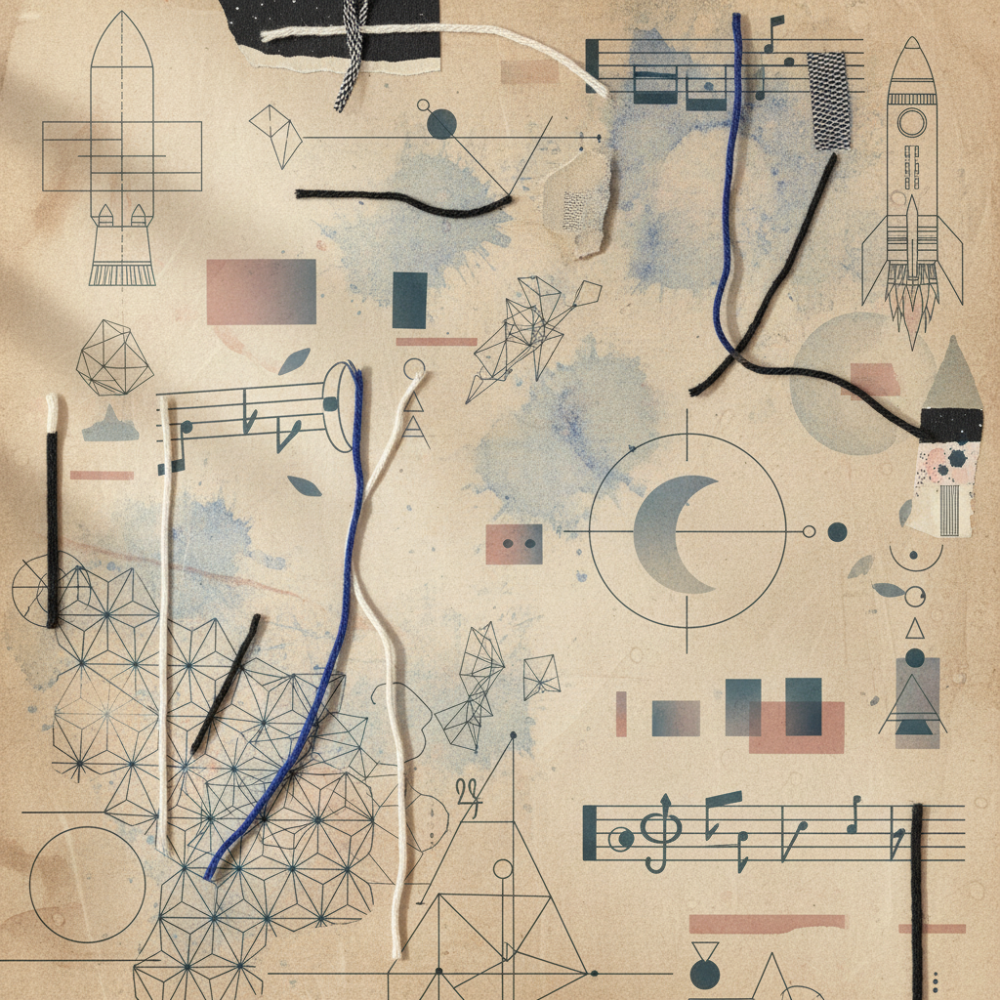

Module IV: Synthesis
Four-Week Integration Plan
A ritualized framework for anchoring metaphysical insights into biological rhythm. Record with precision; observe with neutrality.
TEMPORAL MAPPING 01-04
UNIVERSITY LEVEL PROTOCOL
WEEK 01
Calibration & Initial Resonance
WEEK 02
Structural Deepening

WEEK 03
Somatic Refinement
WEEK 04
Final Embodiment
Daily Rhythm
light_mode
flare
Morning Log
bedtime
auto_awesome